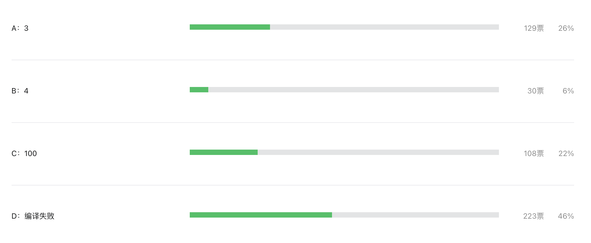

这道题正确率竟然只有 22%
大家好，我是 polarisxu。
《Go 语言爱好者周刊》 第 148 期有一道题目：以下代码输出什么？
package main
import (
"fmt"
)
func main() {
m := [...]int{
'a': 1,
'b': 2,
'c': 3,
}
m['a'] = 3
fmt.Println(len(m))
}
A：3；B：4；C：100；D：编译失败
大家的答题情况如下：

正确率只有 22%（正确答案是 C）。不知道你选对了吗？
核心知识点
这道题目的核心点在于对 rune 字面量的理解和数组的语法。
在 Go 语言规范中有这么一句话：
A rune literal represents a rune constant , an integer value identifying a Unicode code point. A rune literal is expressed as one or more characters enclosed in single quotes, as in
'x'or'\n'.
即一个 rune 字面量代表一个 rune 常量。而常量分为有类型常量（typed）和无类型常量（untyped）。而字面量属于为类型常量，只不过每一个无类型常量都有一个默认类型。比如 a 字面量是一个无类型常量，它的默认类型是 rune。关于常量的这个知识点，之前周刊题解有过详细介绍：常量表达式这个规则应该了解下
。
当在上下文中需要一个无类型常量带类型的值时，会进行隐式转换（或使用默认类型）。本题中，a、b、c 是 rune 字面量（rune 是 int32 的别名），但被当做了 int 数组的下标或索引（[...]int 这是数组的一种语法，数组长度编译时推断出来的）。语言规范中关于索引表达式有这么一句话：
a constant index that is untyped is given type
int
以下示例有助于你理解这个这道题：
// 这样正常
const r = 'a'
var a int = r
// 这样不能编译
const r rune = 'a'
var a int = r
而我们知晓 c 的 ASCII 码是 99，这道题相当于这样：
package main
import (
"fmt"
)
func main() {
m := [...]int{
97: 1,
98: 2,
99: 3,
}
m[97] = 3
fmt.Println(len(m))
}
很显然长度是 100。
不要在乎题目是不是变态，而是希望能够通过题目掌握一两个知识点。